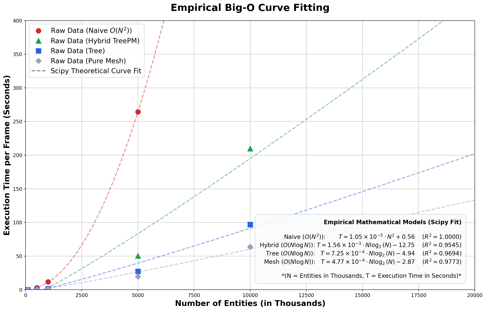
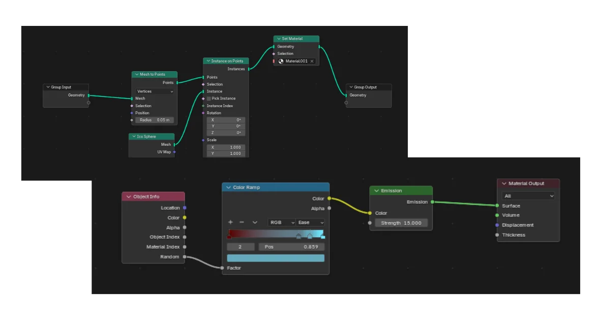

Compoxel N-Body Gravity Engine
Compoxel is a massively parallel N-body gravity engine build in C++ and CUDA. It runs very close to memory to reduce overhead introduced by some external libraries. Through this project, I have also been able to experiment with different algorithms. By implementing a Hybrid Tree Particle Mesh algorithm with dynamic density routing, cache thrashing is significantly reduced with large time speed ups when compared to the naive baseline, allowing for over 10 million entities entirely in the VRAM.

1. Algorithmic Architecture and Methods
Gravitational influence for N-bodies is an $O(N^2)$ computation per time step. To bypass this computational bottleneck, I implemented two distinct optimization algorithms—Hierarchical Tree and Particle-Mesh—and integrated them into a dynamic Hybrid TreePM architecture.
- Voxel: Subdivisions of the physical simulation space used to cluster nearby stars together. Essentially what a pixel is to 2 dimensions as a voxel is to 3 dimensions
- MAC (Multipole Acceptance Criterion): A parameter that is set by the user to determine if the algorithm can use the computationally cheaper tree method without losing too much accuracy. It is a measure of the ratio of the size to distance. ($\large \frac{s}{d} < \theta$ if this is smaller than the theta that has been set by the user, then the calculation can be simplified)
- Warp Divergence: This occurs when a single warp has multiple threads branching out, resulting in these calculations needing to be computed sequentially rather than parallely, which is what GPUs are meant to do.
- Cache Thrashing Caused when memory being accessed is not contiguous in memory. This forces the GPU to "search" around for the information that it needs. This shows up more in algorithms that structure the data (the tree algorithm in this case)
See "2. Performance Metrics" for the empirical time complexity calculations.
Method 1: The Naive Baseline $O(N^2)$
This is the ground-truth brute-force calculation where every entity calculates its attraction to every other object. Gravitational softening is injected into the denominator of the force calculation ($F = G\frac{m_1 m_2}{r^2+\epsilon^2}$) to mathematically cap maximum force and prevent slingshotting to infinity as distance $r$ approaches zero. (if the stars got basically on top of each other, without this term, the acceleration would go to infinity. Because we are using discrete time steps, by the time the next calculation occurs, the star will have already been flung far far away)
Method 2: Hierarchical Center of Mass Voxels (Tree) $O(N \log N)$
Adapted from the Barnes-Hut algorithm for sparse environments. The bounding box is hierarchically
subdivided into voxels (L1 to L3). For distant voxels passing the Multipole Acceptance Criterion
(MAC), the algorithm computes gravitational attraction against the voxel's center of mass rather
than individual stars, reducing the compute load.
For example, in the 10 million star simulation, the naive method would have computed the attraction
for every single star, resulting in one hundred trillion (10 million squared) calculations per time
step (there were 500 time steps in the 10 million star simulation). Instead of this, the tree voxels
compresses far away stars into a single voxel. Even when just considering the L1 (smallest) voxel,
of which there are 27 thousand, this massively cuts down on the required compute. Even more
improvements are achieved with the larger voxels.
An issue of using this method is something that I noticed after the 500 thousand simulation called
"grid anisotropy". This is caused by the voxels exerting all of their force from single point,
rather than the scattered stars pulling it in all directions. This results in the star cluster being
"pulled" initially, resulting in a starfish like shape.
My implementation of the tree suffers greatly from this because it uses a calculation called the
"Nearest Grid Point" where the entire voxels mass is condensed into a single point.
To reduce these effects, I am exploring these approaches:
- Decreasing the MAC threshold makes it harder to be met. This makes it so only voxels that are further away can pass it, while ones nearby fall back to the naive calculation. This will reduce the strength of the voxels (as they are far away and gravitational attraction decreases at distance squared), resulting in less pronounced points. This will increase the amount of computation required, but will reduce the effects of grid anisotropy
- Triangular Shaped Cloud (TSC), instead of condensing all the stars in a voxel, their masses are spread out into the corners of the voxel (kind of like the particle mesh method), this eliminates all of the force from the voxel coming from a single point. More routing logic will need to be created if I do this because if I do it naively, it could balloon to being computationally worse than the naive method.
Method 3: Force Field (Particle-Mesh) $O(N \log N)$
For high-density regions, the GPU falls back to $O(N^2)$ loops in the Tree method. To mitigate this, a force field is generated using Cloud-In-Cell (CIC) scattering. Mass is proportionally spread to the corners of subdivided mesh cubes, creating a global potential field that maintains a constant computation cost regardless of particle density.
Method 4: The Hybrid TreePM Engine
This architecture seamlessly routes GPU warps based on a dynamic density heuristic
(IS_DENSE). If an L1 voxel exceeds the threshold (e.g., 2,000 stars), warps are routed
to the Particle-Mesh solver. Sparse regions continue utilizing the Tree method. This eliminates
cache thrashing in galactic cores and completely prevents the GPU from falling back to brute-force
pointer chasing.

2. Performance Metrics
All benchmarks were strictly standardized on NVIDIA T4 GPUs. To isolate computational time from I/O overhead, figures represent the average of 6 frames, taken only after 2 uncounted "warm-up" frames to ensure PCIe P-states reached P0 utilization and JIT compilation was complete.
Simulation Parameters (10M Run)
| Parameter | Value | Role |
|---|---|---|
| Integration Timestep ($\Delta t$) | 0.05 | Fixed timestep size |
| Softening Factor ($\epsilon^2$) | 0.1 / 0.001 | Prevents division by zero in direct / P3M math |
| L1 Tree Voxel | Grid: 30x30x30 | Base layer (27,000 total voxels) |
| L2 Tree Voxel | Grid: 6x6x6 | Mid layer (216 total voxels) |
| L3 Tree Voxel | Grid: 2x2x2 | Top layer (8 total voxels) |
Execution Time Latency
| Particle Count (N) | Naive (ms) | Tree (ms) | Pure Mesh (ms) | Hybrid TreePM (ms) |
|---|---|---|---|---|
| 100,000 | 130.25 | 185.21 | 158.87 | 164.54 |
| 500,000 | 3059.95 | 848.86 | 708.16 | 868.93 |
| 1,000,000 | 11815.10 | 1783.50 | 1474.25 | 2264.61 |
| 5,000,000 | 264285.20 | 27271.80 | 19512.37 | 50441.12 |
| 10,000,000 | DNF (Timeout) | 96985.15 | 63649.05 | 209969.00 |

Empirical Big-O Curve Fitting
Using Scipy, the benchmark data was empirically fitted to theoretically modeled equations. To ensure I wasn't forcing a particular time complexity upon the simulation, I curve fitted multiple equations ($O(N)$, $O(N^2)$, $O(\log N)$, $O(N \log N)$) and used the one with the highest $R^2$ value. The analysis yielded the following $R^2$ exact fits:
- Naive $O(N^2)$: $T = 1.05\times 10^{-5}\cdot N^2 + 0.56$ ($R^2 = 1.0000$)
- Tree $O(N \log N)$: $T = 7.25\times 10^{-4}\cdot N \log_2(N) - 4.94$ ($R^2 = 0.9694$)
- Mesh $O(N \log N)$: $T = 4.77\times 10^{-4}\cdot N \log_2(N) - 2.87$ ($R^2 = 0.9773$)
- Hybrid $O(N \log N)$: $T = 1.56\times 10^{-3}\cdot N \log_2(N) - 12.75$ ($R^2 = 0.9545$)
Something interesting seen from this graph and the fit curves are the exact $R^2$ values for each method.
- There is no initial set up time for the naive method, and this perfectly fits the curve: the compute time scales flawlessly with the number of entities.
- The force field method requires some setup, so it deviates slightly from the curve if compute was the only consideration. The voxel method requires far more time to set up, because it has to break the space down multiple times, resulting in longer setup times. This appears in the graph as a larger deviation from the theoretical curve-which represents the ideal scenario if pure compute was the only factor.
- Finally, the hybrid method requires about as much setup as the force field and voxel methods combined. This results in a far larger deviation from the line of best fit (note that $R^2$ is not linear so the deviation does not scale linearly to time).
Here is visual per-frame execution latency video comparison of all four methods with some explanations during the video.

3. Validation and Bottlenecks
Error Rate Analysis (Compared to Ground Truth Naive)
| Algorithm (500K Entities) | Global MSE | P99 Error | Max Absolute Error |
|---|---|---|---|
| Tree | 135.41 | 22.66 | 34.40 |
| Mesh | 134.84 | 22.59 | 36.23 |
| Hybrid TreePM | 134.96 | 22.60 | 34.95 |
Stress Testing Hardware
When testing the simulation at 5 million entities, both the Tree and Hybrid Tree PM methods did not compute a single frame before the 3600-second timeout. This was caused by the following issues:
- Cache Thrashing (Pure Tree): When the stars are very densely packed together, the MAC forces the simulation in the naive computation with $O(N^2)$ time complexity. However, the tree methods performs worse than the naive method because the tree had structured the stars in memory, resulting in something known as cache thrashing. This happens when the GPU is forced to "jump" around in memory to find the required memory location (rather than having them being in contiguous memory as is the case for the naive method). This results in even slower computation than in the naive method.
- Incorrect Parameters (Hybrid): For the hybrid method, the simulation didn't work for similar reasons as the pure tree method. The dense threshold was set too high for it to fall back to the mesh method, while the MAC was set too strict for it to begin using the approximations. This resulted in it timing out in the same manner as the pure tree method. Ideally, for the tree PM method, the routing switch would be immediately after the mesh dense threshold was exceeded. However, they use different conditions to begin working, so there is no switch that can be implemented for this. For this reason, I am looking into implementing a dynamic switcher.
4. Project Setup
graph LR B[Initial Conditions] --> C[Zero-Copy Pointer Mapping to FLAME GPU] C --> D[Start Frame Loop] D --> E[Star to Voxel Hashing] E --> F[Aggregate Center of Mass] F --> G[Check Voxel Density Threshold] G -->|Sparse: Under Threshold| H[Tree Method: Flat MAC Check] H --> I[Apply Individual Star Gravity] G -->|Dense: Over Threshold| J[Particle-Mesh: Cloud-In-Cell Scatter] J --> K[Solve Fluid Grid Potential] K --> L[Gather Interpolated Forces] I --> M[Update Kinematics] L --> M M --> N[Raw Binary Dump to NVMe Storage] N --> O[Loop until Frames Complete] O --> P[Tar Archive Creation] P --> Q[Cloud-to-Cloud Transfer to Modal Volume] Q --> R[Parallel Headless Blender Rendering] R --> S[Completed Render]
Rendering
The 10 million entity render was accomplished via a custom headless Blender Python script running in parallel across cloud instances using the Cycles renderer. Each frame's state was imported directly from the NVMe binary dumps into Blender's geometry nodes system. Only the star positions had to be imported because blender did not perform any of the simulations. The geometry and shader graphs seen below are what I used to render the stars.

Serverless Compute Bill of Materials
To reduce infrastructure costs for the 10 million entity collision, parallel compute workflows were distributed across Modal and RunPod. The total cost to generate and render the cinematic simulation was $20.18. A significantly more detailed breakdown can be found on the github repository in the bill of materials section.
| Component | Purpose | Cost Metric | Total Cost |
|---|---|---|---|
| Modal Rendering (500k) | Parallel headless Blender (10x NVIDIA T4) | $0.000164 / sec | $6.30 |
| Modal Rendering (10M) | Headless Blender on NVIDIA L4 (I also found out a way to speed up the rendering, which is why this is cheaper than it would have been) | $0.000222 / sec | $2.00 |
| Colab CPU | Engine compilation / 4.5 GB .ply gen | $9.99 / 100 units | $5.50 |
| RunPod (10M IC) | Engine execution on RTX A5000 | $0.37 / hr | $4.89 |
| Modal Storage Volume | Persistent 16.6 GiB point cloud storage | $0.09 / GiB | $1.49 |
5. Future Roadmap
- Custom Static Arena Allocator: Implementing specialized, contiguous memory management specifically tailored for the dynamic tree architecture.
- Zero-Copy C++ Extension: Moving away from PyFlameGPU overhead to run exclusively in C++, eliminating slow Python bottlenecks.
- Hydrodynamics: Expanding the physics engine beyond pure N-body gravity to incorporate fluid grid solvers for interstellar gas clouds and nebulae.
- Dynamic MAC calculationRather than having the user set a value that they won't know is good, a dynamic MAC caculator could work to limit computational load.
- Larger scale improvements are indicated on the Github repository.